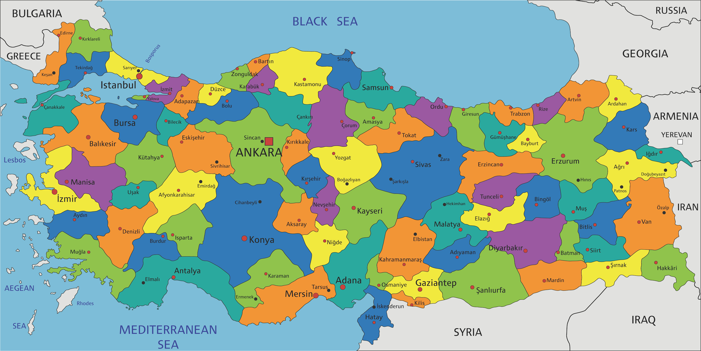

Haritadaki Şehirlere Tıkla
Şehir sayfalarını aşağıdan ziyaret edebilirsiniz:
Türkiye, tarihi ve doğal güzellikleriyle dünyanın dört bir yanından turistleri kendine çeker.
Türkiye Cumhuriyeti, 29 Ekim 1923 tarihinde ilan edilen ve Türk halkının egemenliğine dayanan bir cumhuriyet sistemidir. Türkiye Cumhuriyeti’nin kurucusu ve ilk Cumhurbaşkanı olan Mustafa Kemal Atatürk, Türkiye’yi çağdaş bir ulus devleti olarak şekillendirmek amacıyla bir dizi reform gerçekleştirmiştir. Türkiye’nin temel prensipleri arasında laiklik, demokrasi, hukukun üstünlüğü, insan hakları ve özgürlükler yer almaktadır. Bu prensipler, Türkiye’nin yönetim ve toplumsal yapısının temelini oluşturur. Türkiye Cumhuriyeti, vatandaşlarına eşit haklar ve fırsatlar sunmayı hedefleyen bir devlettir. Türkiye’nin yönetim sistemi, parlamenter demokrasiye dayanmaktadır. Ülkenin yasama organı Türkiye Büyük Millet Meclisi (TBMM), yürütme organı ise Cumhurbaşkanı ve hükümettir. Türkiye Cumhuriyeti’nin yargı organı ise bağımsız ve tarafsız bir şekilde faaliyet gösteren mahkemelerden oluşur. Türkiye Cumhuriyeti’nin toprakları, Anadolu Yarımadası ve Trakya bölgesini kapsamaktadır. Türkiye, Asya ve Avrupa kıtaları arasında köprü konumunda olan bir ülkedir. Türkiye’nin komşuları arasında Yunanistan, Bulgaristan, Gürcistan, Ermenistan, Azerbaycan, İran, Irak ve Suriye bulunmaktadır. Türkiye, ekonomik olarak da önemli bir konuma sahiptir. Tarım, sanayi, turizm ve hizmet sektörleri ülkenin ekonomisinde önemli bir rol oynamaktadır. Türkiye, aynı zamanda stratejik konumu nedeniyle enerji ve ulaşım hatlarının geçiş güzergahında bulunmasıyla da dikkat çekmektedir.